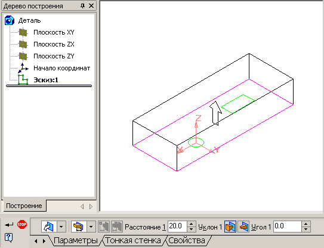

Загальні принципи моделювання деталей
У всіх сучасних системах тривимірного моделювання побудова твердотільної моделі виконується за загальним принципом, який полягає в послідовному виконанні булевих операцій об'єднання, віднімання і перетину над об'ємними елементами (призмами, циліндрами, пірамідами, конусами, сферами і т.д.). Багато разів виконуючи ці прості операції над різними об'ємними елементами можна побудувати найскладнішу модель.
Ескізи і операції
Плоска фігура, в результаті переміщення якої утворюється об'ємне тіло, називається ескізом, а саме переміщення - операцією.
Ескізи
Ескіз може розташовуватися в одній із стандартних площин проекцій, на плоскій грані існуючого тіла або на допоміжній площині, положення якої визначене користувачем. Ескізи зображаються засобами модуля плоского креслення і складаються з окремих графічних примітивів: відрізків, дуг, кіл, ламаних ліній і т.д. При цьому доступні всі команди побудови і редагування зображення. У ескіз можна скопіювати зображення із створеного раніше креслення або фрагмента. Це дозволяє при створенні тривимірної моделі використовувати існуючі плоскі креслення.
Створення нового ескіза
Перед створенням ескіза виберіть в Дереві побудови деталі площину, на якій він буде розташований. Для цього клацніть мишею на її назві. Піктограма площини в Дереві побудови буде виділена зеленим кольором, а у вікні деталі підсвічуватиметься умовне позначення площини (квадрат з характерними точками).
Загальні вимоги до ескізів
Для створення об'ємного елементу підходить не будь-яке зображення в ескізі, воно повинне підкорятися деяким правилам:
- Контури в ескізі не перетинаються і не мають спільних точок.
- Контур в ескізі зображається стилем лінії "Основная". Допоміжні об'єкти, що не входять в контур потрібно зображати іншими стилями ліній (наприклад — потовщена); такі об'єкти не враховуватимуться при виконанні операцій.
- Ескіз може містити декілька прошарків. При виконанні операції враховуються об'єкти у всіх прошарках, окрім погашених.
Операції
КОМПАС-3D має в своєму розпорядженні різноманітні засоби для побудови об'ємних елементів. Проте деякі типи операцій є базовими. До цих основних операцій можна віднести наступні:
- операція витискування — витискування ескіза в напрямі, перпендикулярному площині ескіза;
- операція обертання — обертання ескіза навколо осі, що лежить в площині ескіза:
- кінематична операція — переміщення ескіза вздовж напрямної;
- операція по перетинах — побудова об'ємного елементу по декількох ескізах, які розглядається як перетин елементу в декількох площинах.